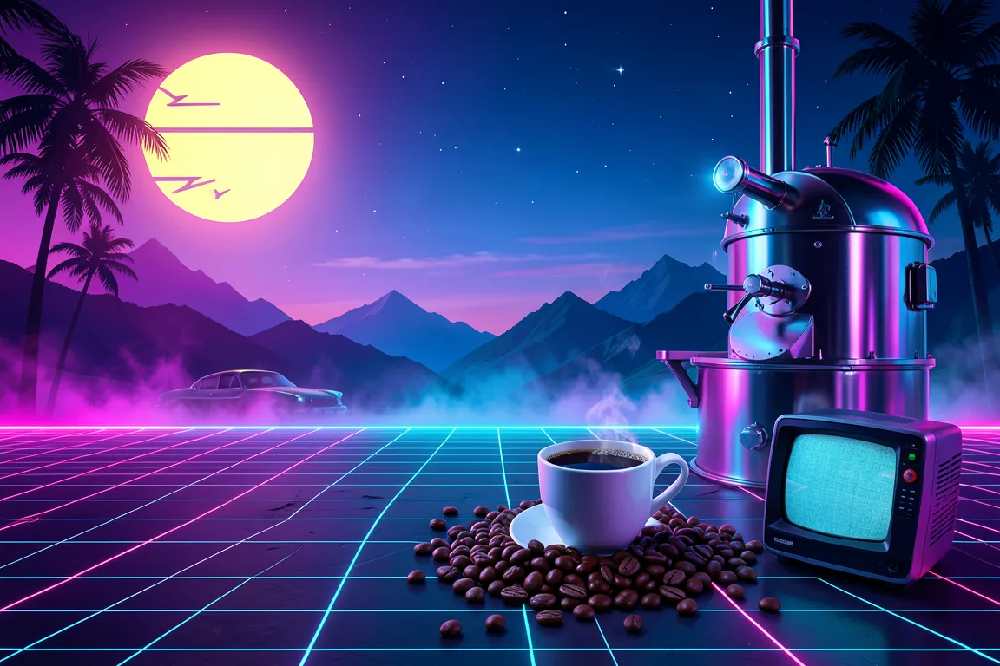

internet · 2013–now · also: Outrun, Retrowave, 80s neon web
A neon sunset, a perspective grid, chrome type, pink and cyan on deep violet, and scanlines. It recalls the 1980s as film and games sold it, and it feels like a night drive.

Core thesis
The 1980s as a dream: neon, chrome and a road to the horizon.
Design principles
Set the ground as a gradient from #12062B at the top to #3A0A5C at the horizon.
Draw a sun of 240px to 480px with a gradient from #FFD319 to #FF2975 and 5 to 8 horizontal cuts that grow from 2px to 10px.
Draw a perspective grid on the floor with lines of 1px to 2px in #FF2975 or #00F0FF, 12 to 20 lines, with a vanishing point at 50% width.
Give headlines a chrome gradient (white to pink to violet) and a glow of 8px to 24px in pink at 60%.
Use only 3 neon hues: pink (#FF2975), cyan (#00F0FF) and yellow (#FFD319) on violet.
Overlay scanlines of 2px at 8% opacity and a vignette at 30%.
Slide the grid toward the viewer at 1 grid cell per 2s in a loop.